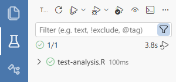

For academic researchers and data scientists using R, a common problem is that the same code does not always produce the same results.
Sometimes the difference is obvious. In worse cases, it happens silently — and you only notice much later, after results have been shared, revised, or even published.
Following best practices (e.g. using renv, clearing your
workspace, version control, and a clear project structure) can reduce
this risk — and I’ve written more about these workflows in this blog
post. However, these practices can be costly during exploratory
work, and they do not fully eliminate all sources of instability.
In practice, results can change due to:
- implicit randomness
- non-deterministic computation (e.g. parallelization)
- changes in underlying data (e.g. APIs or databases)
- platform differences (e.g. floating-point precision, OS-specific behavior)
These issues make it difficult to detect when results have changed — and even harder to manage in collaborative projects.
resultcheck is designed to address this problem by
letting you explicitly track and verify key results as
your analysis evolves. Instead of tracking code,
resultcheck tracks the objects from your
analysis.
The following sections walk through a typical workflow and show how
resultcheck helps you detect and manage changes in your
results.
Mark project root
The core idea behind resultcheck’s testing workflow is
that it copies the files and directories you explicitly provide
into a temporary directory, and runs the script there to mimic a clean
environment.
This means you need to list any required inputs and helper files (for
example, data files, sourced scripts, or other resources) that the
script needs inside the sandbox. To do this reliably,
resultcheck needs to know where your project
root is.
You can mark your project root by creating any of the following in
the root directory. resultcheck will detect them in the
following order:
_resultcheck.yml.Rproj-
.git(created automatically when you rungit init)
You can verify that resultcheck has correctly identified
your project root by running:
resultcheck::find_root()(Optional) Configure resultcheck settings
You usually do not need to modify any settings, but you can customise
resultcheck using a _resultcheck.yml file in
your project root.
For example:
precision
Controls how many digits are used when comparing numeric values.
- Increase this if you need higher precision
- Decrease this to allow for small numerical differences across environments
dir
Specifies where snapshot files are stored, relative to the project root.
By default, snapshots are stored in:
tests/_resultcheck_snaps
Add snapshots to your analysis
The primary way to use resultcheck is to add
snapshot() calls to your analysis script.
For example, if you have a script analysis.R that fits a
model:
You can also snapshot data frames, plots, tables, or any other R object.
First run: creating a snapshot
When you run the snapshot() line for the first time, a
snapshot file is created. This establishes the baseline that future runs
will be compared against.
For example:
> resultcheck::snapshot(model, "model")
Warning: snapshot() will write a snapshot file to: path/to/your/project/tests/_resultcheck_snaps/analysis/model.md
✓ New snapshot saved: analysis/model.mdThe file: tests/_resultcheck_snaps/analysis/model.md
contains a human-readable representation of the model object.
Snapshots should be committed to version control. This allows you to track changes to your results over time, and collaborate with others without losing the ability to detect changes, and is needed for automated testing (see GitHub Tests).
Snapshot representation
By default, snapshot() automatically chooses a
representation for the object.
You can override this using the method argument:
Tip: snapshot before writing outputs
If your analysis writes outputs to disk (e.g. .RData,
.csv, tables, or plots), we recommend that you:
- Create a snapshot for each important output, and
- Call
snapshot()immediately before writing the file
For example:
model <- lm(mpg ~ wt, data = mtcars)
# snapshot the object
resultcheck::snapshot(model, "main_model")
# then write it to disk
save(model, file = "output/model.RData")This ensures that:
- the snapshot always reflects the latest version of the object, and
- any unintended changes are detected before they are written to disk
In general, it is a good idea to snapshot the same objects that you would consider part of your final outputs.
Subsequent runs: comparing against the snapshot
On subsequent runs, snapshot() compares the current
value of the object against the stored snapshot.
If the results match, you will see:
If the results differ, you will see a message indicating the differences:
> resultcheck::snapshot(model, "model")
Warning:
Snapshot differences found for: model
File: path/to/your/project/tests/_resultcheck_snaps/analysis/model.md
Differences:
old[1:7] vs new[1:7]
"# Snapshot: lm"
""
"## List Structure"
- "List of 13"
+ "List of 12"
" $ coefficients : Named num [1:2] 37.29 -5.34"
" ..- attr(*, \"names\")= chr [1:2] \"(Intercept)\" \"wt\""
" $ residuals : Named num [1:32] -2.28 -0.92 -2.09 1.3 -0.2 ..."In interactive use, you will be prompted:
Update snapshot? (y/n):- Press
yto update the snapshot (if the change is expected) - Press
nto keep the existing snapshot and investigate further
In testing contexts (see local tests and GitHub tests), differences result in an error rather than an interactive prompt.
Set up automated tests
In practice, analyses are often not rerun once they are considered “finished”, unless something breaks. To ensure that results remain stable over time, we recommend adding automated tests for scripts that you do not intend to modify further.
resultcheck works naturally with testthat to run
these checks automatically.
For example, to test analysis.R, create a file
tests/testthat/test-analysis.R with the following
content:
library(testthat)
library(resultcheck)
test_that("analysis produces stable results", {
sandbox <- setup_sandbox()
on.exit(cleanup_sandbox(sandbox), add = TRUE)
expect_true(run_in_sandbox("analysis.R", sandbox))
})This test:
- creates a temporary sandbox environment
- runs
analysis.Rinside it - fails if any snapshot differs from the stored version
You can extend your tests to verify that your script produces the expected output files.
For example:
expect_true(
file.exists(file.path(sandbox$path, "output/regModels.RData")),
info = "regModels.RData not found"
)This is useful when your analysis produces files (e.g. model objects, tables, or figures) that you want to ensure are created correctly.
Sandbox environment
The sandbox is a temporary directory that mimics a clean R session.
Because your script may depend on external files (e.g. data or helper scripts), you need to include those files when setting up the sandbox.
For example:
sandbox <- setup_sandbox("data/weather.csv")You can include multiple files:
sandbox <- setup_sandbox(c("data/income.csv", "data/weather.csv"))Or entire directories:
sandbox <- setup_sandbox("data")resultcheck will copy these files into the sandbox while
preserving their relative structure.
Running tests
You can run your tests using
testthat::test_dir("tests/testthat").
If you are using Positron, you can run tests in the test pane once you have installed the Positron R Tester extension. This provides a visual interface for running tests and inspecting results:

Running tests on GitHub
While you can run tests locally, it is often a good idea to run them automatically using GitHub Actions.
This is especially useful for:
- Collaborative projects — tests run automatically on every push, helping catch unintended changes introduced by collaborators
- Saving local resources — running tests (especially sandboxed scripts) can take time and block your current R session
Using GitHub Actions allows tests to run in the cloud, so you don’t need to wait for them locally or manage multiple sessions.
What you need
To set this up, you will need some familiarity with:
-
renv(for managing package versions) - Git and GitHub (for version control)
- GitHub Actions (for automation)
These tools are generally useful for reproducible research, and we recommend learning them if you are not already using them.
Fully automated checks
Once configured, tests run automatically whenever you push changes to your repository.
This means:
- you don’t need to remember to run tests locally
- failures are caught immediately
- your results are continuously checked in a clean environment
Think of this as moving your tests from “something you remember to run” to “something that runs automatically for you.”
For a full walkthrough, see: